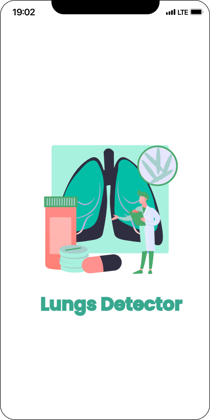
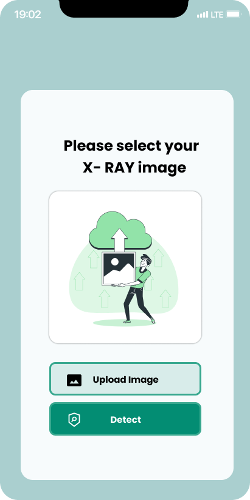
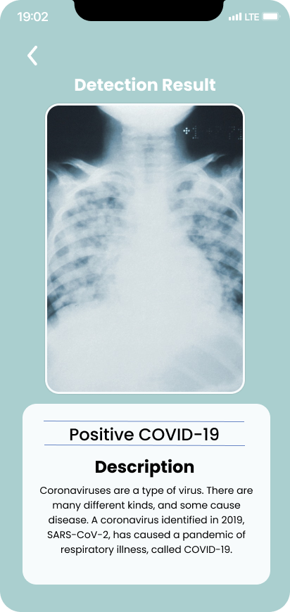

Lungs Detector adalah aplikasi untuk mengklasifikasi tipe - tipe
penyakit paru - paru dari gambar x-ray. Aplikasi ini dikembangkan oleh
grup bangkit 2021 cap0140, penggunaan aplikasi ini simpel dan mudah
dipakai, pengguna hanya perlu memasukan gambar x-ray melalui pemilih
berkas yang nanti akan diolah oleh model machine leaning yang ada.
berikut merupakan tampilan dari aplikasinya



Tautan Repositori